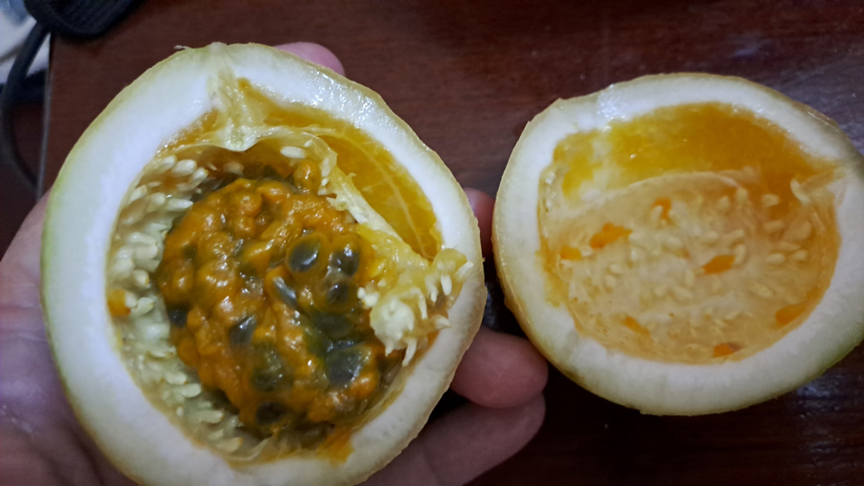

.jpg)
Dan je počeo idilično. Poslednji dan je za uživanje. Nemamo nikakav program. Koristimo ga za kupanje na hotelskoj plaži, ležanje na ležaljkama i čitanje.
U vodi upoznajem dva Zambijca: Ridžesa i Danijela. Komentarišemo situaciju kod njih i kod nas u državi.
Koliko god se trudila da se opustim i kuliram, nisam mogla a da ne prošetam.
Mnogo su mi slatke te uvale u Nungviju pa sam pošla još malo da slikam. Otišla sam dokle se moglo na levu stranu a da se ne skvasi kad se prolazi pored stene. Tu sam srela Masaia Amanija pa mi se on pridružio u šetnji. Krenuli smo na desno. Prošli pored Nanasija. Nastavili dalje. Bogami sam sa njim daleko dalje otišla nego što bih sama išla, ali on me je bodrio: hajde da vidiš još ovo i ovo. Pričao mi je o Masaima, kako imaju osmoro, devetoro dece i da su deca pored krava bogatstvo. On se nije školovao, ali je tu na plažama Zanzibara odlično naučio engleski. Želeo je da uči i srpski. Pitao me za fraze na srpskom. „Kako si“, „dobro si“ je već znao. Naučio je i „dobrodošli“, „polako“, „nema problema“, „zdravo“. Brzo pamti.
Odveo me do ribarskog dela naselja, sa brodićima. Tu je bilo i krdo krava, na moju radost. Do tada smo viđali ponegde po koju kravu. Imaju istu onu grbu kao u Indiji, ali ovde je bila poslastica jer ih je bilo gomila uz more.
Na putu nazad smo vežbali pesmicu „Jambo, jambo bwana“ da snimimo i otpevamo. Nisam baš bila sigurna u reči pa sam stalno gledala u njega pokušavajući da mu čitam sa usana dok smo snimali, ali uspeli smo.
Baš sam se umorila jer je šetnja bila zaista duga i još po pesku, ali sam zadovoljna. Zgodno je imati tako jednog svog Masaia jer onda drugi ne prilaze pa ne moram svima govoriti da je all good.
Naravno da sam ga častila, a on mi je rekao: „God bless you.“
Uveče smo uzeli stvari iz sefa. Olbina je volela da ide na masaže pa smo razdesile tajminge. Ona je ostala još u sobi, kasnije će u šetnju, tako da sam ja krenula sa pasošem, parama i Lukinim fotoaparatom u šetnju. Prošetala sam tuda kuda šetamo svako veče.
Želela sam da probam passion fruit (marakuju), ali nisam bila sigurna da sam je prepoznala na tezgi pa sam pitala da li je to, to. Jedna žena mi je rekla: Muzungu (belac, pogrdno, ovde verovatno gluperda). Prvi put sam na svojoj koži osetila rasizam i nije mi bilo svejedno.
Nastavila sam da šetam bez posebnog cilja, uživajući u poslednjim mirisima i bojama večeri.
Došla sam do krajnje tačke, dokle obično šetam, do zemljenog prostranstva što im je danju pijaca i setim se da smo tu jednom pokupili Anu i Borisa iz grupe. I da su oni tu negde bili smešteni u gest hausu. Rekoh da ja lepo skrenem tu desno u ulicu i vidim i to, bar sada kada je poslednja noć.
Tu mi je prišao Bijunju, rekao je da mu ime znači začin, so. Učio je da je postojala Jugoslavija, nabrojao mi sve države koje su od nje nastale: Srbija, Hrvatska, BiH... Baš me iznenadio. Kaže da voli istoriju.
Deo sela u koji smo došli se razlikuje od dela u kome sam do sada bila. Trgovci ne dozivaju. Nema „free look“, „hakuna matata“. Malo sam imala osećaj da nisam dobrodošla. Mada su isto celom dužinom ulice, prodavnice. Lokalci često ne vole da se slikaju, ali ovde mi je Bijunju rekao: „Slobodno slikaj, ovde si sada sa mnom, inače umeju da traže novac.“ I zaista sam slikala bez problema i momke na motorima i prodavnice. To mi je prijalo.
I tako, kroz priču, odaljimo se mi poprilično. Sad bih ja nazad. Bijunju mi kaže da je on ambasador svoje zemlje i da hoće da ja vidim što više, pa će on da me povede drugim putem nazad. Zvuči primamljivo da vidim još, a i malo me strah da se vratim sama ovuda kuda smo prošli. Kaže on: „Ne brini, ovo je još bliži put do tvog hotela.“ A ja sa pasošem, parama, Lukinim fotoaparatom. A i bez njih bih se bojala. Kaže on: „Vidim da se bojiš, gledaj ovo.“ Zaustavi on jednog uniformisanog čoveka, da li je policajac ili čuvar nečega, pita ga za put do mog hotela, ovaj potvrdi da ima dva puta i da su oba bezbedna.
Ok, sad ja zaustavim dve žene i pitam njih. Rekoše one da je daleko i da najbolje uzmem tuk-tuk. Pitam da li je bezbedno i da li su ovako isto sve prodavnice i osvetljeno tim drugim putem. Kažu one da jeste.
I skrenemo mi u novu ulicu. Ubrzo su nestale prodavnice. Rekoh: „Gde su prodavnice?“ Kaže on: „Treba ti nešto da kupiš? Evo sada će biti.“ Čekaj, rekoste svi da su i ovde prodavnice. Zašto ih nema? Neko gradilište, gradi se hotel, ograda okolo. Uskoro nema više nikoga na ulici, samo zid, Bijunju i ja. On se sve nešto naslanja na mene, gurka me. Šta mu to znači? Mali je, ali žilav, definitivno jači od mene. Kaže: „Vidim da si se uplašila, evo ti moj telefon.“ Kakva mi je sigurnost telefon? Prestravljena sam. Ne znam kad sam bila toliko uplašena. Šta mi je ovo trebalo? Kako sam uspela da se nađem u ovako glupoj situaciji? Stežem pasoš i pare uz sebe. Ako me zvizne, neće mi trebati ni pasoš ni pare.
U to se pojave dve ženice. Lakše mi je. Posle njih ugledam još dvoje. Ne mogu da verujem! To su Sanja i Uroš iz grupe. Ja sam izgledala toliko unezvereno da je Sanja rekla: „Dođi, treba ti zagrljaj.“ I trebao mi je. Jako. Hvala joj. Rekoše da oni tuda prolaze svako veče kad idu u gest haus i da nije nikakva drama. Vrlo brzo smo bili i na plaži. Realno, nije bila nikakva drama, ali ja to tada nisam znala i bila sam preplašena. Otpratili su me do hotela. I tako se završilo moje poslednje veče na Zanzibaru.
Tako se završilo moje poslednje veče na Zanzibaru: sa zahvalnošću, olakšanjem i osećajem da sam doživela sve: i osmeh, i strah, i toplinu ljudi.
Svako putovanje nas malo promeni. Učimo da verujemo, ali i da slušamo instinkt. Da svet nije ni crn ni beo, već šaren, kao Zanzibar u suton.
I da su najlepše uspomene često one koje nas malo uplaše, pa nas nauče da još više volimo život.
.jpg)
.jpg)
.jpg)
.jpg)
.jpg)

.jpg)
.jpg)
.jpg)
.jpg)
.jpg)
.jpg)
Kad Sandra krene u novi kraj sveta, vaš inbox prvi sazna. Prijavite se i stižu vam sve nove priče mejlom.